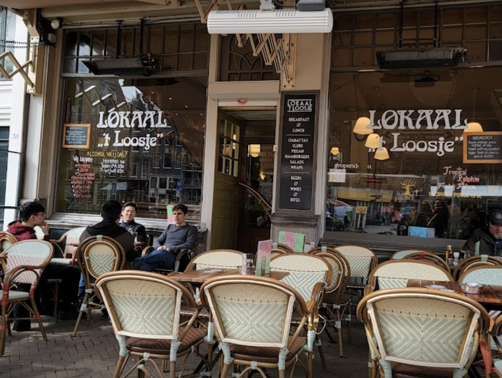
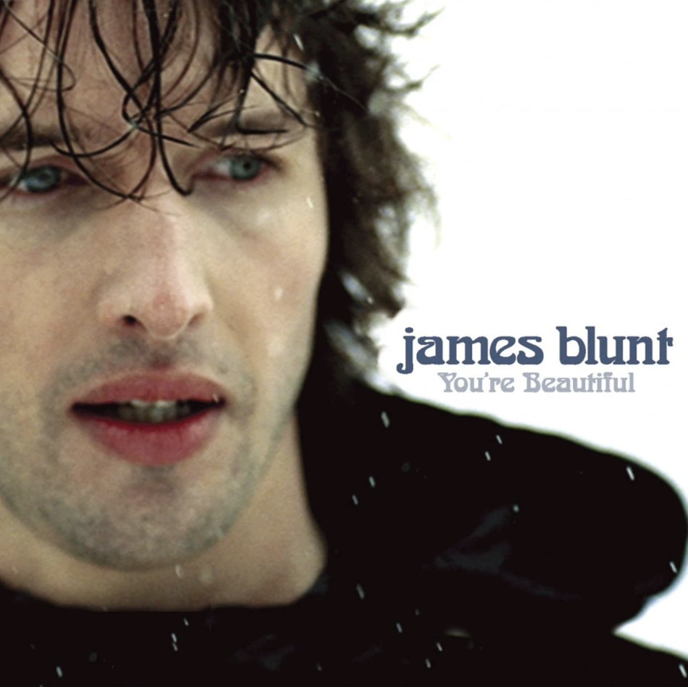

Arnold Böcklin is een decoratief lettertype dat in 1904 ontworpen werd bij de lettergieterij Otto Weisert
Het is genoemd ter nagedachtenis aan de in 1901 overleden Arnold Böcklin.
Op deze webpagina nemen we een duik in het verhaal achter dit lettertype.
W
ie is Arnold Böcklin? Arnold was een kunstenaar uit Zwitserland die leefde van 1827 tot 1901. Hij staat bekend om zijn schilderijen waar hij symbolen gebruikt om diepere emoties en betekenissen uit te drukken. Hij wordt beschouwd als een belangrijke kunstenaar van een Europese kunstbeweging genaamd "symbolisme," die ontstond in de tweede helft van de 19e eeuw. Het symbolisme in kunst draait om het gebruik van symbolen om diepere gevoelens en betekenissen over te brengen. In Böcklin's werk vind je vaak mysterieuze en droomachtige elementen terug.
Nieuw Lettertype
Dit is een voorbeeld van het lettertype:
abcdefghijklm
opqrstuvwxyz
0123456789
!@#$%^&*()
_+{}|<>?/.,';\
Otto Wiesert
Het Arnold Böcklin-lettertype werd in 1904 geïntroduceerd door de lettergieterij Otto Weisert in Stuttgart. In dit lettertype zijn nog steeds kenmerken te zien van de bloemmotieven die typerend zijn voor de Jugendstil-beweging. Dergelijke lettertypen werden voornamelijk ontworpen voor grotere lettergroottes, zoals op posters. Het decoratieve aspect was veel belangrijker dan de leesbaarheid, en Arnold Böcklin speelde een bijzondere rol in het boekontwerp van de Jugendstil-beweging. Vandaag de dag wordt dit lettertype vaak gebruikt om mensen te doen denken aan "de goede oude tijd.

Font in gebruik
Het lettertype Arnold Böcklin komt voor in diverse typografische toepassingen. Op de website "Fonts In Use"
heb ik verschillende werken ontdekt waarin het lettertype Arnold Böcklin wordt toegepast.
Meestal betreft het oudere afdrukken met een dromerige of fantasierijke uitstraling.
Hieronder geef ik enkele voorbeelden waarin dit lettertype wordt gebruikt.
Ook wordt het font vaak ingezet voor een klassieke uitstraling en zelfs in de wereld van gamedesign!

Het Arnold Böcklin font is ons misschien wel het meeste bekend door de zanger James Blunt. Hij is een Britse singer-songwriter en muzikant. Blunt staat bekend om zijn kenmerkende stemgeluid en zijn pop- en folkgeoriënteerde muziek. Hij brak door in 2005 met zijn debuutalbum "Back to Bedlam," waarvan het nummer "You're Beautiful" een enorme hit werd en wereldwijd erkenning kreeg. drie keer raden welk font hier op werd gedrukt gedrukt? Juist ja, Arnold Böcklin!
Mijn poster
In de tweede week hebben we, na het verzamelen van alle inspirerende foto’s van verschillende typografieën, een poster gemaakt met het lettertype wat jouw het meeste aansprak. Voor deze opdracht heb ik de poster hier links gemaakt met een Art Noveau lettertype. Dit lettertype bevatte sierlijke letters met een lange geschiedenis. Als ik nu over straat loop zie ik ineens deze letters overal in terug. Deze poster was de aanleiding tot het maken van deze informatieve webpagina. De kleuren die ik heb gebruikt heb ik bewust gekozen om een hoog contrast weer te geven en hierdoor goed op te vallen.
Waarom spreekt dit mij aan?
Het lettertype Arnold Böcklin, oorspronkelijk ontworpen in 1904 door de lettergieterij Otto Weisert, is een decoratief lettertype dat zijn naam eerd aan de beroemde Zwitserse symbolistische schilder Arnold Böcklin. Dit lettertype heeft een dromerige en fantasierijke uitstraling, en het wordt vaak geassocieerd met de Jugendstil-beweging, waarin decoratieve aspecten vaak belangrijker waren dan leesbaarheid. Het wordt vaak gebruikt in oudere afdrukken en kan zowel een klassieke als een fantasierijke uitstraling geven aan typografische toepassingen. Tijdens het onderzoek heb ik verschillende werken ontdekt waarin Arnold Böcklin wordt toegepast. Dit lettertype wordt niet alleen gebruikt om een nostalgische "goede oude tijd" op te roepen, maar ook voor gamedesign en andere creatieve doeleinden. Tijdens dit onderzoek heb ik ervaren hoe lettertypes meer betekenis, gevoel en sfeer hebben en veel vertellen over een object, gebouw of naam. Dit project heeft geleid tot een grotere waardering voor de kunst van typografie en het vermogen om anders naar lettertypen te kijken. Kortom, Arnold Böcklin is niet alleen een lettertype, maar ook een cultureel symbool.